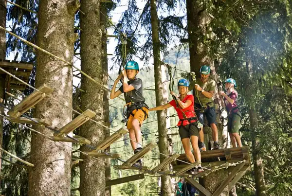
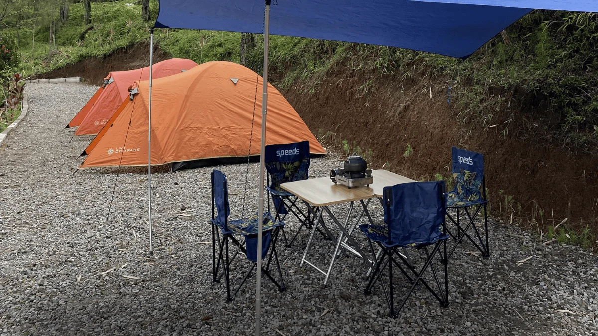

Daftar Isi
Paket outbound Malang murah adalah program kegiatan luar ruang berbiaya terjangkau yang dirancang untuk perusahaan, sekolah, atau komunitas guna membangun kerja sama tim tanpa menguras anggaran acara.
- Paket outbound murah tetap dapat mencakup fasilitator, permainan kelompok, dan konsumsi dasar.
- Harga umumnya dipengaruhi oleh jumlah peserta, durasi acara, dan lokasi venue.
- Memilih penyedia terpercaya lebih penting daripada sekadar mengejar harga termurah.
- Kawasan Malang dan Batu menawarkan banyak pilihan venue dengan skema paket yang fleksibel.
- Perencanaan matang membantu menghindari biaya tambahan yang tidak terduga.
Apa Itu Paket Outbound Malang Murah?
Paket outbound Malang murah adalah program kegiatan tim yang disusun dengan struktur biaya efisien, biasanya menggabungkan permainan kelompok sederhana, fasilitator, dan venue di kawasan Malang Raya tanpa mengorbankan tujuan utama kegiatan.
Istilah "murah" dalam konteks ini bukan berarti kualitas rendah, melainkan skema harga yang disesuaikan dengan kebutuhan dasar acara. Penyedia jasa biasanya menawarkan paket dasar berisi beberapa permainan inti, fasilitator berpengalaman, dan lokasi standar, kemudian menawarkan tambahan opsional bagi yang menginginkan fasilitas lebih lengkap.
Paket seperti ini banyak dicari oleh perusahaan skala kecil hingga menengah, sekolah yang mengadakan kegiatan Masa Pengenalan Lingkungan Sekolah (MPLS) atau Latihan Dasar Kepemimpinan Siswa (LDKS), maupun komunitas yang ingin mengadakan acara kebersamaan tanpa anggaran besar. Secara umum, permintaan terhadap paket outbound dengan harga terjangkau cenderung meningkat pada periode awal tahun ajaran dan menjelang akhir tahun, saat banyak instansi menjalankan agenda team building tahunan.

Kegiatan outbound murah yang terencana baik dapat memberikan hasil maksimal.

Liburan Seru Bareng Circle Kamu!
Ayo bangun kekompakan tim Anda bersama instruktur profesional dan paket penawaran spesial kami. Hubungi admin sekarang!
Chat Admin SekarangSiapa Saja yang Biasanya Membutuhkan Paket Ini?
Paket outbound murah paling sering dicari oleh perusahaan rintisan, sekolah dengan anggaran kegiatan terbatas, dan komunitas swadaya yang tetap ingin mendapatkan manfaat team building tanpa biaya besar.
Selain tiga kelompok tersebut, keluarga besar atau instansi pemerintah tingkat desa juga kerap memanfaatkan paket serupa untuk acara kebersamaan tahunan. Kebutuhan setiap kelompok berbeda, sehingga penting menyesuaikan pilihan permainan dan durasi dengan tujuan acara masing-masing.
Mengapa Memilih Kawasan Malang untuk Outbound Murah?
Kawasan Malang dan Batu dipilih untuk outbound murah karena memiliki banyak venue alam terbuka dengan akses mudah, udara sejuk, dan persaingan penyedia jasa yang membuat harga tetap kompetitif.
Malang Raya, yang mencakup Kota Malang, Kabupaten Malang, dan Kota Batu, dikenal sebagai salah satu pusat wisata dan kegiatan luar ruang di Jawa Timur. Kondisi geografis dataran tinggi membuat suhu udara lebih sejuk dibanding kota-kota pesisir, sehingga nyaman digunakan sepanjang hari untuk aktivitas fisik.
Banyaknya penyedia jasa outbound di kawasan ini juga menciptakan persaingan sehat yang berdampak pada variasi harga. Peserta dapat membandingkan beberapa penawaran sebelum menentukan pilihan, sesuatu yang lebih sulit dilakukan di daerah dengan penyedia jasa terbatas.
Apa Saja yang Biasanya Termasuk dalam Paket Outbound Murah?
Paket outbound murah pada umumnya mencakup fasilitator, beberapa sesi permainan kelompok, penggunaan venue dasar, serta perlengkapan permainan standar, dengan opsi tambahan seperti konsumsi atau merchandise.
Komponen dasar yang lazim ditemukan dalam paket ini meliputi:
- Fasilitator atau instruktur pemandu acara
- Beberapa sesi ice breaking dan permainan kelompok
- Penggunaan venue outdoor dasar
- Perlengkapan permainan sederhana
- Dokumentasi dasar berupa foto kegiatan
Fasilitas tambahan seperti konsumsi lengkap, merchandise, transportasi antar-jemput, atau venue dengan fasilitas premium biasanya dikenakan biaya terpisah. Memahami komponen dasar ini membantu calon peserta membandingkan penawaran secara adil, karena tidak semua penyedia mencantumkan cakupan paket secara rinci.
Apa Manfaat Mengikuti Outbound dengan Biaya Terjangkau?
Outbound dengan biaya terjangkau tetap memberikan manfaat inti berupa penguatan komunikasi tim, peningkatan kepercayaan antaranggota, dan penyegaran suasana kerja tanpa membebani anggaran acara.
Manfaat ini tidak berkurang hanya karena skema harga lebih efisien, selama struktur permainan dan fasilitator tetap kompeten. Beberapa manfaat yang umum dirasakan peserta antara lain:
- Meningkatkan kekompakan dan rasa saling percaya antaranggota tim
- Melatih kemampuan komunikasi dan pengambilan keputusan bersama
- Memberikan jeda dari rutinitas kerja atau belajar yang monoton
- Membentuk kenangan kolektif yang dapat mempererat hubungan jangka panjang
Bagi perusahaan, kegiatan semacam ini juga dapat menjadi sarana evaluasi informal terhadap dinamika tim, tanpa memerlukan anggaran sebesar acara gathering skala besar.
Bagaimana Cara Memilih Penyedia Paket Outbound Murah yang Terpercaya?
Memilih penyedia outbound murah yang terpercaya dapat dilakukan dengan memeriksa rekam jejak, transparansi rincian paket, kualifikasi fasilitator, serta kejelasan prosedur keselamatan sebelum acara berlangsung.
Beberapa langkah praktis yang dapat dilakukan meliputi meminta rincian tertulis mengenai apa saja yang termasuk dalam paket, menanyakan pengalaman fasilitator dalam menangani kelompok dengan karakteristik serupa, serta memastikan penyedia memiliki prosedur keselamatan dasar untuk aktivitas fisik di luar ruang. Penjelasan lebih rinci mengenai proses seleksi ini dibahas lebih lanjut pada artikel cara memilih penyedia paket outbound murah terpercaya di Malang.
Berapa Kisaran Biaya Paket Outbound di Malang?
Biaya paket outbound di Malang bervariasi tergantung jumlah peserta, durasi kegiatan, jenis venue, dan kelengkapan fasilitas yang dipilih, sehingga tidak ada angka tunggal yang berlaku untuk semua kasus.
Secara umum, semakin banyak jumlah peserta, biaya per orang cenderung menurun karena beban operasional dibagi lebih merata. Durasi kegiatan setengah hari biasanya lebih terjangkau dibanding durasi satu hari penuh atau bermalam. Pembahasan lebih mendalam mengenai komponen biaya dan cara menghitung anggaran yang realistis tersedia pada artikel kisaran biaya paket outbound Malang dan kesalahan umum yang membuat budget membengkak.
Apa Kesalahan Umum yang Perlu Dihindari?
Kesalahan umum dalam memilih paket outbound murah meliputi tergiur harga tanpa memeriksa cakupan layanan, mengabaikan aspek keselamatan, dan tidak menyesuaikan jenis permainan dengan karakteristik peserta.
Kesalahan-kesalahan ini sering muncul karena calon peserta terlalu fokus pada angka harga tanpa mempertimbangkan nilai yang didapatkan. Pembahasan rinci mengenai kesalahan umum dan cara menghindarinya juga tersedia pada artikel cluster mengenai biaya dan kesalahan umum.
Bagaimana Cara Menyesuaikan Paket dengan Kebutuhan Peserta?
Penyesuaian paket dilakukan dengan mempertimbangkan usia peserta, tingkat kebugaran, tujuan acara, dan waktu yang tersedia, sehingga permainan yang dipilih relevan dan aman diikuti.
Untuk peserta sekolah, permainan cenderung difokuskan pada aspek edukatif dan kedisiplinan. Untuk peserta korporat, permainan biasanya lebih menekankan komunikasi lintas divisi dan pemecahan masalah bersama. Diskusi awal dengan penyedia jasa mengenai profil peserta akan membantu menyusun paket yang lebih tepat sasaran, meskipun tetap berada dalam skema harga terjangkau.